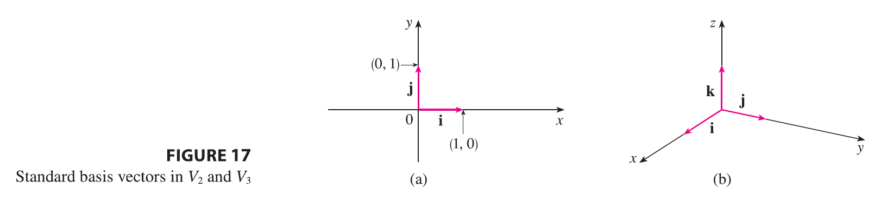
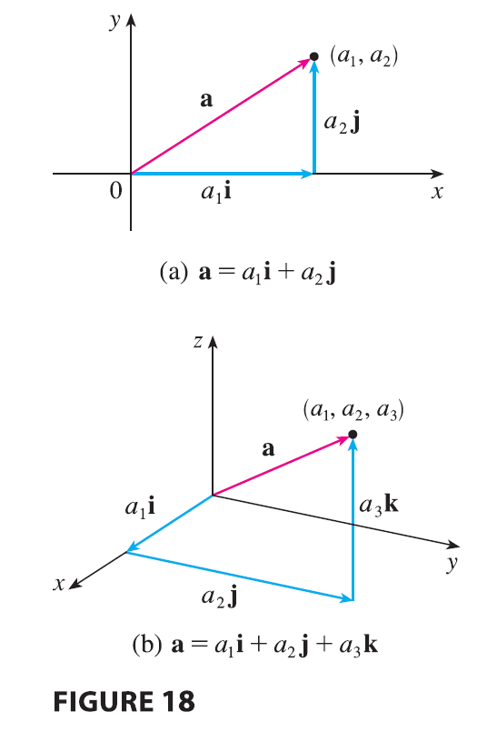

Three vectors in \(V_3\) play a special role. Let \[ \mathbf{i} = \langle 1, 0, 0 \rangle \quad \mathbf{j} = \langle 0, 1, 0 \rangle \quad \mathbf{k} = \langle 0, 0, 1 \rangle \]
These vectors i, j, and k are called the standard basis vectors. They have length 1 and point in the directions of the positive x-, y-, and z-axes. Similarly, in two dimensions we define \(\mathbf{i} = \langle 1, 0 \rangle\) and \(\mathbf{j} = \langle 0, 1 \rangle\). (See Figure 17.)

| If \(\mathbf{a} = \langle a_1, a_2, a_3 \rangle\), then we can write \[ \mathbf{a} = \langle a_1, a_2, a_3 \rangle = \langle a_1, 0, 0 \rangle + \langle 0, a_2, 0 \rangle + \langle 0, 0, a_3 \rangle \] \[ = a_1\langle 1, 0, 0 \rangle + a_2\langle 0, 1, 0 \rangle + a_3\langle 0, 0, 1 \rangle \] \[ \mathbf{a} = a_1\mathbf{i} + a_2\mathbf{j} + a_3\mathbf{k} \tag{2} \] Thus any vector in \(V_3\) can be expressed in terms of i, j, and k. For instance, \[ \langle 1, -2, 6 \rangle = \mathbf{i} - 2\mathbf{j} + 6\mathbf{k} \] Similarly, in two dimensions, we can write \[ \mathbf{a} = \langle a_1, a_2 \rangle = a_1\mathbf{i} + a_2\mathbf{j} \tag{3} \] See Figure 18 for the geometric interpretation of Equations 3 and 2 and compare with Figure 17. |
|  |
EXAMPLE 5 If \(\mathbf{a} = \mathbf{i} + 2\mathbf{j} - 3\mathbf{k}\) and \(\mathbf{b} = 4\mathbf{i} + 7\mathbf{k}\), express the vector \(2\mathbf{a} + 3\mathbf{b}\) in terms of i, j, and k.